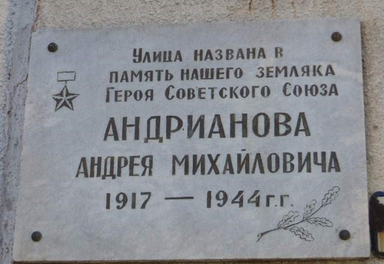

ОРЕЛ
ГОРОД ВОИНСКОЙ СЛАВЫ


Город воинской славы - Орел.
Российский город Орёл расположен на обоих берегах притока Волки - Оки. За свою многолетнюю историю (Орлу более 450 лет), город неоднократно вставал на пути противника, давая отпор захватчикам.В период Великой Отечественной войны город почти 2 года был в оккупации. 3 октября 1941 г. фашисты, обойдя Брянский укрепрайон, захватили Орел. Вокруг города на 15 км была объявлена запретная зона, на территории Орла враг организовал лагерь, как для военнопленных, так и для и мирного населения. Но всё же орловцы создавали подпольные группы, направленные для борьбы с противником. Орел освобожден в ходе Курской битвы в результате операции «Кутузов» 5 августа 1943 г. Немецкая оборона была пробита совместным ударом Центрального, Западного и Брянского фронтов.В апреле 2007г. Указом Президента РФ Орлу присвоено почетное звание «Город воинской славы».

СКВЕР ТАНКИСТОВ
Мемориальный сквер в честь подвига героев —
танкистов, первыми ворвавшимися
в Орёл при освобождении города от немецких оккупантов.
Историческая справка о сквере танкистов.
Сквер Танкистов – одно из древнейших исторических мест г. Орла. Раньше оно именовалось Ильинской площадью, или просто Ильинской, по названию часовни, находящейся на ней. После Великой октябрьской социалистической революции 1 мая 1920 года., в день проведения всероссийского коммунистического субботника на месте Ильинской площади был разбит сквер, получивший название первомайский.
22 июня 1942г. Началась Великая Отечественная война с фашисткой Германией, войска которой вероломно напали на нашу страну. 3 октября 1941г. Орел был оккупирован немцами, и первомайский сквер был уничтожен.
Во время орловской наступательной операции «Кутузов» первыми в г. Орел ворвались танкисты 17-й Гвардейской танковой бригады, 34-го Гвардейского танкового полка порыва, 253 отдельного танкового полка вместе с 5-й, 129-й 380-й стрелковыми дивизиями. Бойцы 380 стрелковой дивизии Санько И.Д. и Образцов В.И. водрузили знамя над зданием по улице Московской, ныне это Площадь мира дом №5.
5 августа 1943. Года город Орел был освобожден от немецко-фашистских захватчиков.
6 августа 1943г. В Первомайском сквере было произведено захоронение танкистов, отдавших жизнь за орловскую землю. Траурный митинг открыл над братской могилой павших товарищей начальник политотдела 17 гвардейской танковой бригады гвардии полковник ________. На митинге выступали командир 17 гвардейской танковой бригады гвардии полковник Шулыгин и боевые товарищи павших.
Танкистах, отдавших жизнь за орловскую землю, над братской могилой был установлен танк Т-70, доставленный с опушки Медведевского леса. Орудие его смотрело на запад, туда, где сквер стал называться Сквером танкистов.
5 августа 1963г. Маршалом Советского Союза И.Х.Баграмяном перед могилой павших танкистов был зажжен Вечный Огонь Славы.
В 1968 году был создан мемориал: танк-памятник был перенесен на площадь перед сквером и вместо Т-70, установили Т-34, как оружие славы танкистов.
8 мая 1968 г. Вечный огонь был перенесен к мемориальному памятнику, начальником штаба 129-й Орловской стрелковой дивизии гвардии полковником Курсовым П.И. – участником освобождения г. Орла.
На карте
Участники ВОВ, работавшие в ОМТ
Сименихин Николай Никанорович – директор техникума
Онищук Василий Михайлович – военрук
Сыколов Сергей Васильевич - мастер производственного обучения
Чикин Геннадий Сергеевич – шофер
Щёкин Николай Васильевич – шофер
Лагвинов Василий Петрович – мастер ОТК УПМ
Рыжов Николай Сергеевич – преподаватель
Проваленов Григорий Иванович – преподаватель
Павлов Василий Семенович – преподаватель
Их именами названы улицы Орла
Андрианова ул.
Андрианова ул. Андрианов Андрей Михайлович (1917—1944), сержант, командир минометного расчета. Герой Советского Союза. Родился в деревне Жилина, частично вошедшей в территорию г. Орла.
Генерала Родина ул.
Родин Георгий Семенович (1897—1976). Родился в дер. Болотово Орловского уезда (ныне — района). Генерал-лейтенант. Командир 30-го Уральского добровольческого танкового корпуса 4-й танковой армии, участвовавшей в освобождении Орловской области. Похоронен в Орле.
Белякова ул.
Беляков Сергей - журналист газеты Орловская правда, участник Великой Отечественной войны. Сотрудник газеты 3-й гвардейской армии «Боевой товарищ». Погиб весной 1945 года на западном берегу Одера. Автор книги "Рассказ о нашем городе"(1939).
Генерала Жадова ул.
Жадов Алексей Семёнович (1901—1977) — советский военачальник, первый заместитель главнокомандующего сухопутными силами, генерал армии. Родился в селе Никольское ныне Свердловского района Орловской области
Кукушкина ул.
Кукушкин Николай Павлович (1918-1943), старший лейтенант, командир эскадрильи штурмовой авиации. Родился в деревне Цветынь. ныне Орловского района Орловской области. Погиб в Заполярье, направив свой горящий самолет на вражеский аэродром Аллакуртти в районе города Кандалакши.
Леонова ул.
Леонов Иван Антонович (р. 1923) - бывший лётчик 192-го истребительного авиационного полка и 33-й эскадрильи связи 1-й воздушной армии, старший лейтенант в отставке; единственный в мире боевой лётчик, воевавший в небе с ампутированной рукой. Родился в деревне Маговка Шаблыкинского района Орловской области в многодетной крестьянской семье. В боях Великой Отечественной войны с 1943 года. Сражался на Курской дуге, где и открыл свой боевой счёт, сбив в небе над Курском вражеский бомбардировщик "Ю-88". К середине июля 1943 года лётчик-истребитель 192-го истребительного авиаполка И.А. Леонов совершил 50 боевых вылетов, сбил 5 самолётов противника. 15 июля 1943 года, при выполнении воздушной разведки и фотосъёмки расположения войск противника в районе железной дороги на участке Орёл - Поныри самолёт лейтенанта Леонова И.А. был сбит, а сам пилот получил тяжелейшее ранение: вражеский снаряд раздробил ему плечевой сустав. Военные медики спасли отважному лётчику жизнь, но левую руку по плечо пришлось ампутировать. Став инвалидом, молодой офицер сумел при личной встрече убедить командующего 1-й воздушной армией М.М. Громова в порядке исключения оставить его на лётной работе. Потерянную руку И.А. Леонов заменил искусственной, приспособив протез на левом плече, и пилотируя "небесный тихоход" По-2, стал выполнять боевые задачи в качестве лётчика 33-й эскадрильи связи 1-й Воздушной армии: вёл разведку, доставлял приказы, летал во вражеский тыл с грузами для партизан, совершив более 60-и боевых вылетов. Герой России (1995).
Сечкина пер
Сечкин Владимир Ефимович (1925-1942), родился в семье железнодорожника в городе Петропавловске (Казахстан). Жил в Орле с 1936 года. Был секретарем комсомольской организации школы №32. Во время Великой Отечественной войны возглавил молодёжную подпольную группу, действовавшую в оккупированном городе Орле против немецко-фашистских захватчиков. Награжден медалью «За отвагу» посмертно.
Цветаева ул.
Цветаев Вячеслав Дмитриевич (1893, ст. Малоархангельск, ныне Орловской обл.,— 1950, Москва) - советский военачальник, генерал-полковник (1943), Герой Советского Союза (1945). Участник 1-й мировой войны, командир роты, затем батальона, поручик. После Октябрьской революции перешёл на сторону Советской власти. В Гражданскую войну командовал ротой, батальоном, полком, бригадой и 54-й стрелковой дивизией на Северном и Западном фронтах. Принимал участие в борьбе с басмачеством в Средней Азии. В Великую Отечественную войну в 1941—42 командующий оперативной группой войск 7-й армии, заместитель командующего 4-й армией, командующий 10-й резервной армией, с декабря 1942 — 5-й ударной армией. В мае — сент. 1944 заместитель командующего 1-м Белорусским фронтом, затем командующий 6-й и 33-й армиями. Войска под его командованием участвовали в Ростовской, Мелитопольской, Никопольско-Криворожской, Березнеговато-Снигирёвской, Одесской, Висло-Одерской и Берлинской операциях. После войны зам. главкома и главнокомандующий Южной группой войск. С января 1948 начальник Военной академии им. М. В. Фрунзе. Награждён 2 орденами Ленина, 4 орденами Красного Знамени, 3 орденами Суворова 1-й степени, орденами Кутузова и Богдана Хмельницкого 1-й степени и медалями.
Памятник Лётчикам в Орле
Памятник посвящён советским лётчикам, героически сражавшимся за освобождение Орловщины в годы Великой Отечественной войны. Однако это мнение является спорным, так как это памятник военным летчикам новой эпохи реактивных самолетов. Конкретного памятника летчикам Великой Отечественной в Орле нет. Что очень странно,ведь именно в орловском небе открыл счет сбитым вражеским самолетам прибывший на фронт после излечения легендарный А.П.Маресьев, именно здесь совершали подвиги французы из легендарной "Нормандии", позже наименованной "Нормандия-Неман". Правда, есть улица "Нормандия-Неман".
Памятник был открыт 4 августа 1973 года накануне 30-й годовщины освобождения Орла от немецко-фашистских захватчиков.
Памятник летчикам расположен напротив входа в воинскую часть почти по середине между остановками "Ботаника" и "Стрела". Памятник - результат работы архитектора О.С. Вернослова и инженера - В.В. Левенстама. Что представляет собой памятник? Наклонную стелу с взмывающим ввысь МИГ-17, установленную в центре своеобразного плато, возвышающего конструкцию над окружающими дорожками и делающего ее поистине фундаментальной. Вокруг памятника установлены лавочки, разбиты клумбы, есть даже урны для мусора.
МиГ-17 установлен в память о летчиках, в том числе и 472-го истребительного авиационного полка (472 ИАП), который был сформирован в Орле 15.05.1950 на базе 15 гвардейской истребительной авиационной дивизии и относился к 7-му кПВО (Брянск) Московского округа ПВО.
Полк перелетел из Орла в Курск в 1979 году, тогда же полк получил новые МиГ-23П, на которых и пролетал до 1.05.1998 года. К тому моменту он оставался последним и единственным авиаполком в Европейской части страны, летающим на МиГ-23П. Причины перебазирования из Орла в Курск называются разные, основной же считается необходимость выноса аэродрома базирования дальше на юг, дабы разнести зоны действия 191 ИАП (Ефремов) и 472 ИАП для большей эффективности применения на южных подступах к Москве и отодвигания подальше от неё первого рубежа перехвата.
Архитектором памятника стал О.С. Вернослов, а инженером - В.В. Левенстам.
В настоящее время памятник находится в состоянии ремонта.
Открытие обновлённого монумента планируется провести в преддверии 5 августа 2018 года и приурочить к 75-летию освобождения города Орла и Орловской области от фашистов.